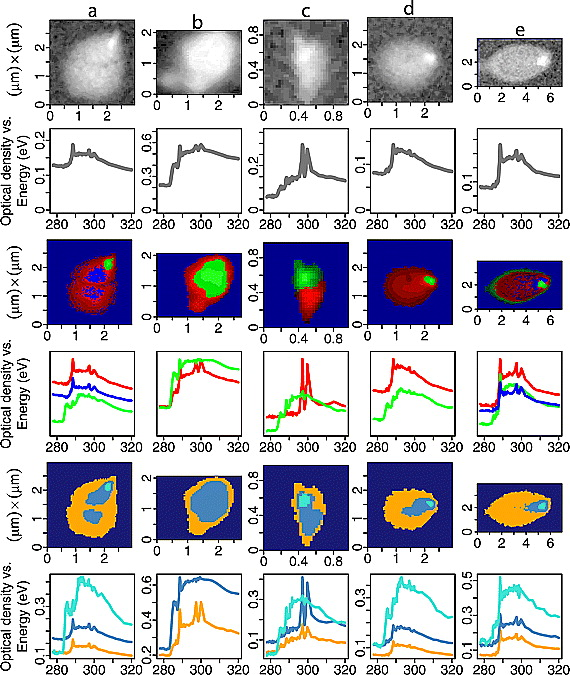
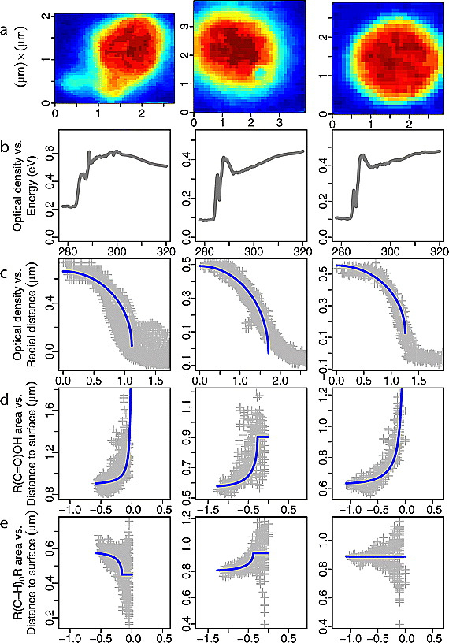
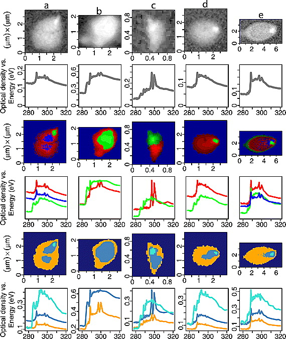
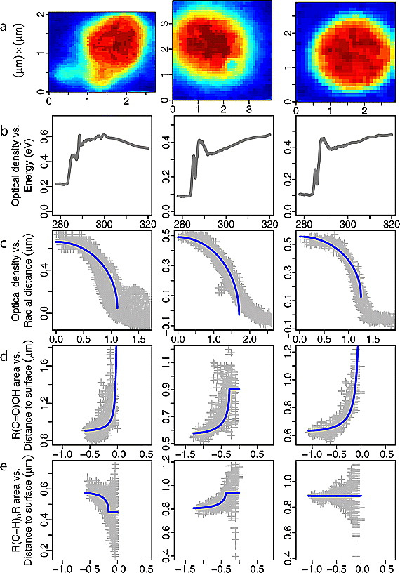
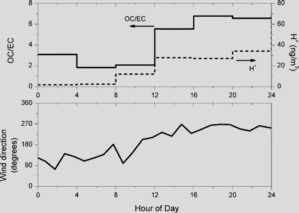
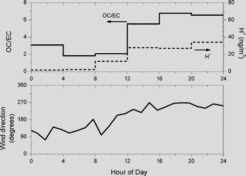
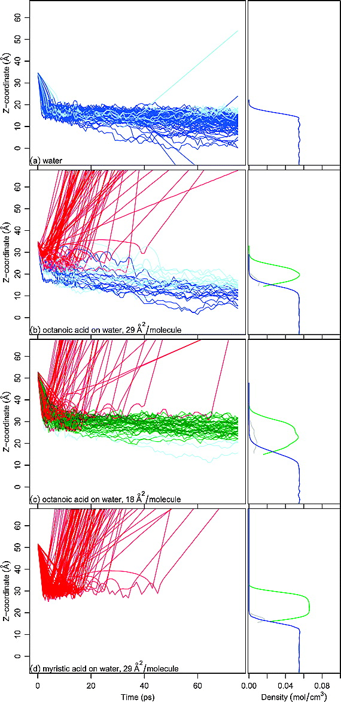
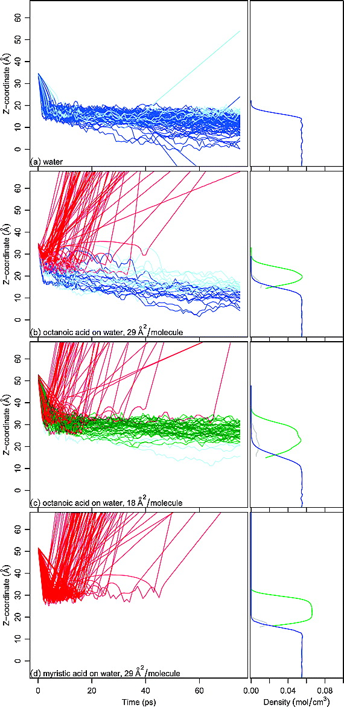
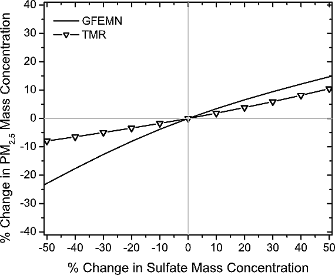
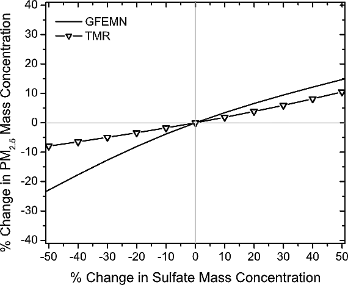

Research Areas
| Main | Current projects | Past projects | Publications | Personnel | Resources |
Click images for full-sized figure. Table of contents can be accessed from right corner of page.
Table of Contents
Characterization of ambient and laboratory-generated, atmospherically relevant aerosol morphology and chemical composition
Spectromicroscopy of individual particles

Carbon K-edge STXM-NEXAFS
 



{kind=link}
{kind=link}
Morphologies and chemical heterogeneities present in organic aerosols
will affect their optical properties, volatility, and water uptake in
different ways and are important to consider for satellite retrieval,
measurement interpretation, or climate prediction. Of the 600+
individual particles were analyzed, over half exhibited non-ideal or
non-uniform configurations; approximately 200 of which were classified
into one of four categories which correspond to mixture or
configuration types. Notably, no occurrence of morphology or
heterogeneity was confined to a single geographical location or field
campaign. Such an observation underscores the similarities in source
characteristics or atmospheric processing mechanisms leading to the
observed variations in our particles. (Takahama et al., 2010)
Iron L-edge STXM-NEXAFS


Understanding the morphology and redox state of atmospheric iron
particles is important in achieving insight into the processes by
which these they contribute to direct radiative forcing, cloud
condensation activity, catalysis of sulfur oxidation, and destruction
of organic ligands in aqueous droplets and phytoplankton
productivity. We explored the relationships between a number of
different indicators for source emission characteristics and surface
processing at the single-particle level; neither factor alone was
sufficient in explaining our observations of reduced states of iron,
suggesting that both factors are important and necessary to consider
for modeling and predicting oxidation states of iron particles in the
atmosphere. (Takahama et al., 2008)
Spectroscopy of particle ensembles

Functional group analysis by FTIR provides several useful characterizations for organic aerosol measurements. By using the full dimensionality of the feature vector (i.e., the full infrared spectrum analyzed) in a factor-analytic decomposition of ambient aerosol spectra, component profiles have been shown to retain distinguishing spectral features which have been related to original sources of organic aerosols. A reduced representation of the FTIR spectrum in molar quantities of functional groups is physically meaningful to the extent that it has been linked to predictive models of molecular interactions in the condensed phase within an established thermodynamic framework (i.e., activity coefficients), from which hygroscopic properties and volatilities can be estimated. Software
Aerosol Mass Spectrometry

An Aerosol Chemical Speciation Monitor (ACSM; Aerodyne Research, Inc.) was deployed during the CalMex campaign (manuscript under review). The ACSM measures molecular mass fragments by aerosol vaporization followed by laser-induced ionization, similar to the AMS but with unit mass resolution and lower sensitivity (and providing only bulk PM1 composition rather than chemically-resolved size distributions). Image from http://aerodyne.com/.
Laser-induced incandescence for quantification of black carbon particle mass and number size distributions

A Single Particle Soot Photometer (SP2; Droplet Measurement Technologies, Inc.) was deployed during the CalMex Campaign (manuscript in preparation). The SP2 measures the black carbon content of individual light-absorbing particles through heating and measurement of incandescence, to which calibrations are applied and harvested to provide traditional particle ensemble statistics (size distribution, number, and mass). Image from http://www.dropletmeasurement.com/.
Source apportionment of atmospheric aerosols
Apportionment of OM mass to different source classes and regions


Measurements at a high-elevation site in Whistler, Canada, were used to characterize organic aerosol composition subject to various influences below and above the boundary layer. Multi-seasonal measurements at the site permitted chemical differentiation in the aerosol generated from burning and non-burning forest emissions, which are particularly important contributors to primary and secondary organic mass (OM). A combination of regression, cluster, and factor analysis on organic aerosol IR spectra were combined with additional measurements of molecular mass fragments and black carbon, and ionic composition to classify the campaign periods into several composition domains. The variations among chemical domains are attributed to dominant source categories influencing the measurements at the site during the corresponding periods. The suggested source types associated with different periods are supported by Potential Source Contribution Function (PSCF) analysis, which discretizes meteorological backtrajectories and associates airmass origins to the gridded geographical domains. In addition, OM/OC and O/C ratios derived from the spectroscopic analysis indicated that the organic aerosol reaching this high-elevation site was highly oxygenated; possibly formed through secondary formation processes (Takahama et al., 2011b). Software
Assessing magnitude of acid "catalysis" mechanism on SOA formation for Western Pennsylvania
 

{kind=link}
Contradictory evidence by researchers pose the question of whether reductions in inorganic acidity (in the form of SO2 or NOx reductions) might provide effective controls on PM2.5 mass concentrations, as secondary organic aerosol (SOA) has been shown in the laboratory to form more readily on acidic seed particles typically generated from the oxidation of these inorganic precursor gases. Understanding whether this acid-enhancement mechanism on SOA formation is important in the atmosphere is a relevant question for evaluating emission controls to meet PM2.5 regulations. We examined the semi-continuous measurements of organic carbon (OC), elemental carbon (EC), and inorganic species observed during the Pittsburgh Air Quality Study to detect coupling in the variations of inorganic acidity and OC. From our measurements, we were not able to detect significant enhancements of SOA production during periods of high inorganic acidity in Western Pennsylvania most of the time. Assuming a causal relationship between inorganic acidity and OC, we estimate reductions in OC for Western Pennsylvania that might result from reductions in inorganic acidity as 2±4% by a regression technique, and an upper bound for this geographic area was estimated to be 5±7% based on reported values from laboratory measurements. This work suggested that expected reductions in SOA mass as a result of SO2 or NOx in the Western Pennsylvania region would be small (<10%). (Takahama et al., 2006)
Measurement and modeling of aerosol properties
Hygroscopicity

Measurement of complex aerosol phase-state upon drying
{kind=link}
{kind=link}
The conditions under which loss of water (efflorescence) in atmospheric aerosols occur are not well known, though this phase transition can affect the partitioning and lifetime of semi-volatile species and impact the propensity for aerosols to become warm or ice cloud nuclei. Mixtures of inorganic salts and secondary organic aerosol (SOA) are ubiquitous in the urban airshed; ammonium sulfate + SOA mixtures were generated in the Carnegie Mellon Smog Chamber to studying this property in atmospherically-relevant aerosols. These particles were humidified, dried, and sampled with a humidified tandem differential mobility analyzer (HTDMA) to determine the efflorescence relative humidity for these complex particles. The results of this experiment suggest that our current knowledge of efflorescence in inorganic particles may provides a strong basis for predicting the phase state of mixed particles in the atmosphere. (Takahama et al. 2007)
Estimation of organic aerosol on CCN activity of dust and black carbon particles

Organic aerosols can alter the supersaturation required to activate particles into cloud droplets through modification of particle volume, surface tension, or solubility. Using Kohler theory, the impact of organic aerosol on CCN activation was calculated for soluble (glutaric) and insoluble (stearic acid) organic compounds coating or clumped onto insoluble black carbon or dust particles. The domain of atmospherically-relevant coating thicknesses and mass fraction of the organic component is estimated from STXM-NEXAFS analysis for individual particles, and regimes where chemistry and size are critical for determining CCN activation were delineated over this domain. (Takahama et al., 2010).
Estimation of mass accommodation coefficients by molecular dynamics simulation
 

{kind=link}

Molecular dynamics simulation was used to determine the impacts of organic coatings as reported by X-ray spectromicroscopy and TOF-SIMS measurements on dynamic properties of water uptake; specifically, the influence of organic films on water mass accommodation coefficients. Water molecules were impinged in silico (virtually) upon aqueous surfaces coated by two types of organic molecules with varying surface coverage. Scattering of water molecules by hydrophobic tails of the tested fatty acids were found to be the primary mechanism for reducing water mass accommodation coefficients in our study, and this reduction occurred at modest mass fractions of the organic component. A special case of entrainment of water vapor molecules at the film-water interface was also observed for the over-compressed surface examined in this work. (Takahama et al., 2011).
Volatility

Measurement and modeling of nitric acid partitioning in Pittsburgh, PA, during PAQS


Following a thorough evaluation and calibration of high time resolution measurements of inorganic compounds measured by ion chromatography and flash volatilization during the Pittsburgh Air Quality Study (Wittig et al., 2004), a thermodynamic model, GFEMN, was used to simulate the partitioning of PM2.5 nitrate aerosol and nitric acid. Model predictions were evaluated against independent measurements also made during the study. This work reported that chemical equilibrium predictions of aerosol nitrate were often within measurement uncertainties, and that this model was senstive enough to detect and simulate nitric acid partitioning among externally-mixed particles, under the correct assumptions. (Takahama et al., 2004)
Assessing impact of gas-particle partitioning on emission control strategies for Western Pennsylvania
 

{kind=link}
To examine how the inorganic PM2.5 concentration responds to changes in emissions, we introduce an observation-based box model, Thermodynamic Model with Removal (TMR), to estimate responses of inorganic PM2.5 mass to precursor concentrations. TMR introduced production and deposition terms into the atmospheric mass balance, while GFEMN - which was evaluated favorably in the aforementioned study in simulating phase partitioning - to solve the condensation-evaporation problem within an operator-splitting scheme. TMR was used to investigate sulfate, total ammonia, and total nitric acid control strategies for Western Pennsylvania during the winter using measurements collected during the Pittsburgh Air Quality Study. (Vayenas et al., 2005)